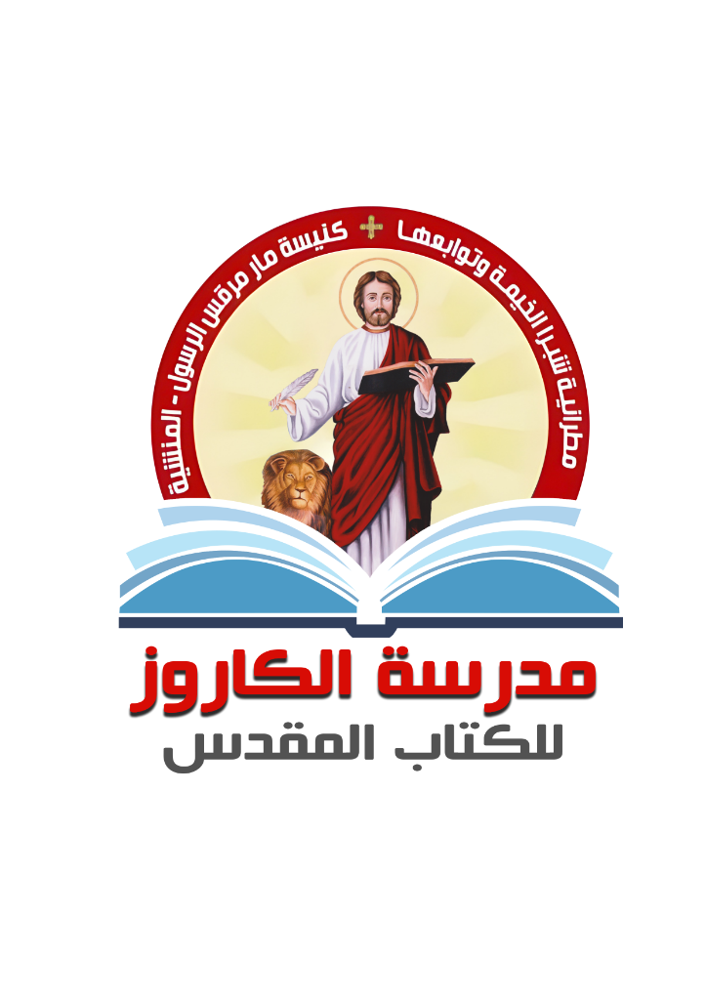
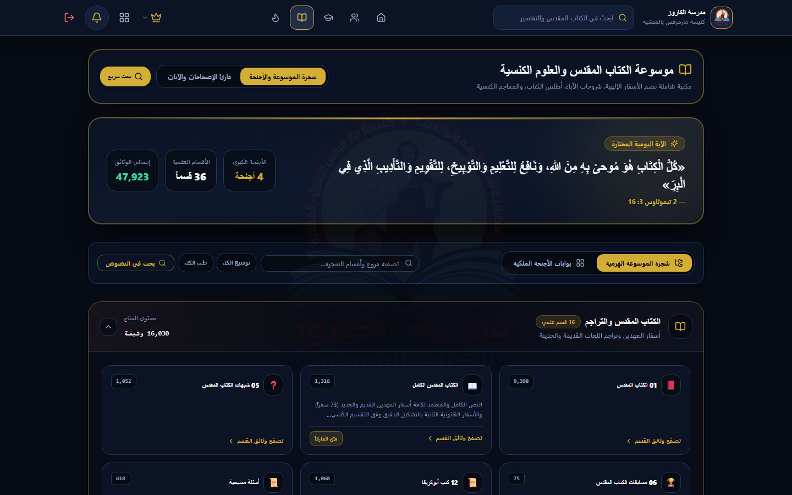
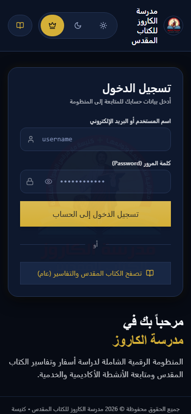

قداسة البابا الأنبا تواضروس الثاني
بابا وبطريرك الكرازة المرقسية

☩مطرانية شبرا الخيمة وتوابعها
كنيسة مارمرقس الرسول
نيافة الحبر الجليل الأنبا مرقس
مطران شبرا الخيمة وتوابعها
استخدام التكنولوجيا الحديثة في خدمة التعليم الكنسي ومدرسة الكاروز
فكرة التطبيق هي تسخير التكنولوجيا الحديثة لخدمة الكنيسة وتيسير دراسة الكتاب المقدس؛ ليكون الإنجيل وتفاسير الآباء في يد كل دارس وخادم بسهولة، مع متابعة الحضور والامتحانات ومسابقات الآيات بأسلوب تفاعلي ميسر للجميع.


لماذا احتاجت مدرسة الكاروز إلى المنظومة الرقمية؟
تلف وضياع الكشوفات الورقية
صعوبة حفظ ومتابعة درجات وسجلات مئات الدارسين عبر السنين بالدفاتر اليدوية، وتلف الأوراق والملفات عند تعاقب الخدام.
استنزاف الوقت في رصد الحضور
إهدار وقت المحاضرات في النداء والتسجيل الورقي، مع غياب الإحصاء الفوري للغياب وصعوبة متابعة المنقطعين لافتقادهم.
تشتت المناهج في المجموعات
صعوبة المذاكرة والرجوع للمحاضرات الصوتية والمذكرات بسبب تفرقها في رسائل وسائل التواصل الاجتماعي دون فهرس منظم.
أهداف ورسالة المنظومة الرقمية
سجل رقمي دائم وموحد
ملف إلكتروني موحد لكل دارس وخادم يحفظ بياناته، درجاته، ونسب حضوره طوال سنوات دراسته دون فقدان أي سجل.
تعليم كنسي متاح دائماً
توفير المناهج المعتمدة، شروحات الآباء، والمحاضرات الصوتية في مكان واحد يسهل على الدارس الوصول إليه من أي مكان.
متابعة وافتقاد فوري
تقارير فورية وسريعة توضح للخدام مستويات الدارسين وتساعدهم على الافتقاد الدوري للمنقطعين بضغطة زر واحدة.
الأنظمة الذكية العاملة داخل المنصة
رصد الحضور الذكي بالباركود
تسجيل حضور الدارس في ثوانٍ معدودة عبر مسح الرمز السريع، مع حصر فوري وتلقائي للحضور والغياب.
ماراثون حفظ الآيات والتنافس
مسابقة أسبوعية تفاعلية لاختبار حفظ الشواهد، ورصد درجات الدارسين تلقائياً مع لوحة شرف للمتميزين.
نظام الاختبارات الرقمية
امتحانات إلكترونية بتصحيح فوري وتلقائي، مع تسجيل دقيق للنتائج في السجل الأكاديمي لكل دارس.
تنظيم الفرق الدراسية (1، 2، 3)
متابعة مقررات ودارسي كل فرقة دراسية باستقلالية تامة، وبصلاحيات مخصصة لكل خادم فرقة.
حائط التفاعل والأنشطة (كفيسبوك)
حائط تفاعلي لنشر أنشطة الفرق، تبادل التأملات، والتعليقات والإعجابات لتشجيع وتواصل الخدام والدارسين.
أعياد الميلاد والتذكير بالافتقاد
إشعارات تلقائية بأعياد ميلاد الدارسين والخدام، مع تذكير ذكي لافتقاد الغائبين والمنقطعين دورياً.
أقسام موسوعة الكتاب المقدس التفاعلية
الكتاب المقدس
نص قانوني موثق 100%الـ 73 سفراً القانونية كاملة بالتشكيل الدقيق، مع فهارس ذكية، تقسيم أصحاحات وشواهد، والأسفار القانونية الثانية.
وثوقية المصادر وسلامة التعليم الأرثوذكسي
المرجع الرقمي المعتمد
الاعتماد المباشر على أرشيف موقع القديس تكلا هيمانوت، المرجع القبطي الأرثوذكسي الأكبر والأوثق لنصوص وتفاسير الكتاب المقدس.
تفاسير كبار آباء الكنيسة
تجميع شروحات موثقة لآباء ومعلمي الكنيسة المشهود لهم بسلامة التعليم وعمق الشرح الآبائي:
أمانة التسليم والتدقيق اللاهوتي
فحص وتدقيق كامل لجميع النصوص والمحتوى العلمي والتأكد من مطابقتها لتسليم الكنيسة القبطية الأرثوذكسية:
تجربة استخدام سهلة وسريعة على جميع الأجهزة
تطبيق هاتف فوري وخفيف
يعمل مباشرة عبر المتصفح ويمكن إضافته للشاشة الرئيسية بنقرة واحدة، دون الحاجة للذهاب إلى متاجر التطبيقات.
شاشات متجاوبة ومريحة
قراءة سلسة وخطوط واضحة متوافقة تماماً مع مختلف الشاشات: الموبايل، التابلت، والكمبيوتر المكتبي.
أداء سريع وتصفح خفيف
تحميل فوري للصفحات والأسفار حتى في ظل ضعف شبكة الإنترنت داخل القاعات أو أثناء التنقل.
أمان البيانات والخصوصية الرقمية
فصل صارم للصلاحيات
صلاحيات محددة بدقة لكل من (الإدارة، الخدام، والدارسين) بحيث لا يطّلع أي مستخدم إلا على بيانات فرقته فقط لضمان السرية.
حماية السجلات والدرجات
تشفير كامل للجلسات والبيانات لمنع أي اختراق أو تعديل غير مصرح به، مع مراقبة أمنية على مستوى السجلات الفردية.
نسخ احتياطي تلقائي مستمر
حفظ دوري منتظم لقواعد البيانات السحابية لضمان عدم فقدان أي معلومة، مع إمكانية استرجاع البيانات في أي لحظة.
البوابة الرقمية لمدرسة الكاروز متاحة الآن
مدرسة الكاروز للكتاب المقدس
تحت رعاية الآباء
برعاية قداسة البابا المعظم الأنبا تواضروس الثاني وشريكه في الخدمة الرسولية نيافة الحبر الجليل الأنبا مرقس.
دخول المنظومة الآن 🏷️